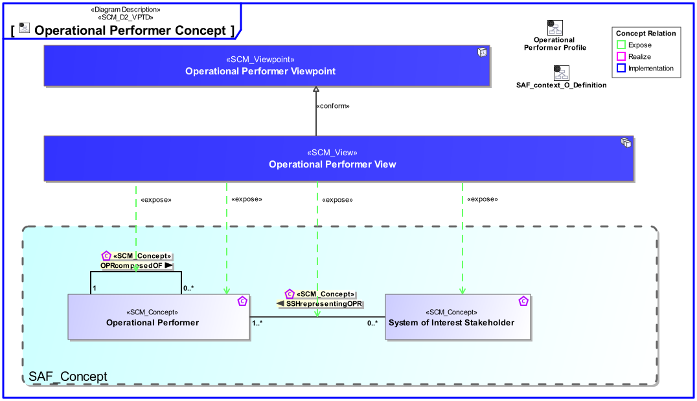
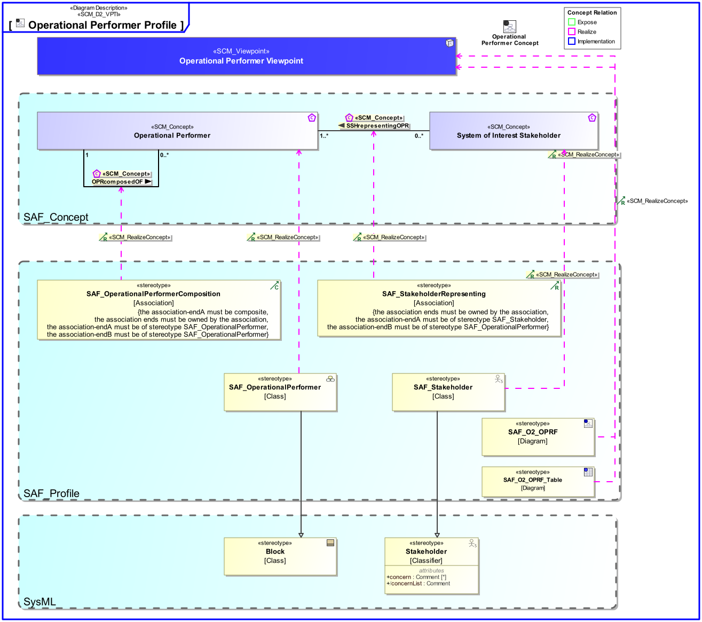

O2_OPRF Operational Performer Viewpoint
| Domain | Aspect | Maturity |
|---|---|---|
| Operational | Taxonomy & Structure |


The Operational Performer Viewpoint represents the taxonomy of the identified Operational Performers, if existing and relevant for the understanding of the operation of the intended solution.
The Operational Performer Viewpoint supports the “Business or Mission Analysis Process” activities of the INCOSE SYSTEMS ENGINEERING HANDBOOK 2015 [§ 4.1] and contributes to the problem or opportunity statement.
A block definition diagram (BDD) featuring Operational Performers. and their relations in terms of decomposition or generalization at a level of detail required for problem understanding and analysis. Note: Identified Stakeholders are related to Operational Performers if appropriate.
A table containing operational performers, their inter relations and relations to stakeholders
The following Stereotypes / Model Elements are used in the Viewpoint:
The Diagram shows the concepts exposed by the viewpoint, and related concepts if necessary.

| Concept | Documentation |
|---|---|
| Operational Performer | An Operational Performer is an element of the Operational Context that is capable to perform Operational Process Activities contributing to a specific identified Operational Capability. An Operational Performer may be any kind of organization, person, or even a system playing a role in one or more Operational Contexts. Aliases: UAF::OperationalPerformer |
| OPRcomposedOF | Specifies the fact that an Operational Performer consists of one or more Operational Performers. |
| SSHrepresentingOPR | Specifies the fact that a SOI Stakeholder is representing an Operational Performer. |
| System of Interest Stakeholder | An individual, team, or organization (or classes thereof) with interests in, or concerns relative to, a system. It may be involved in any life cycle phase of the System. The Stakeholder represents a class or kind of Stakeholders. Stakeholders have a certain involvement: Stakeholder Involvement captures the influence of a project specific Stakeholder on the System. Stakeholder Involvement is characterized by * Contact Person * Kind of involvement * Life Cycle Phases involved * Relevance decision if and up to which degree Stakeholder is considered * Rationale for decision when Stakeholder is not considered |
The Diagram shows the implementation of exposed concepts.
